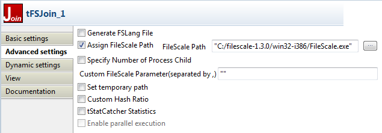

Avertissement
Ce composant est disponible dans la Palette du studio uniquement si vous avez souscrit à l’édition de Talend Big Data Studio. Pour plus d’informations concernant le mode Massively Parallel eXtension, consultez le Guide utilisateur de Talend Big Data Studio.
Famille de composant | FileScale | |
Fonction | Le composant tFSJoin regroupe les champs de deux fichiers en utilisant des valeurs communes aux deux. Il compare des colonnes du fichier leftset (fichier d’entrée) aux colonnes de référence du fichier rightset (fichier de référence) et écrit les données agrégées et/ou rejetées. | |
Objectif | Ce composant permet de regrouper un fichier leftset et un fichier rightset en utilisant un prédicat de jointure pour identifier les enregistrements sur lesquels effectuer une jointure. | |
Basic settings | Property type | Peut être Built-in ou Repository. |
|
| Built-in : Propriétés utilisées ponctuellement. |
|
| Repository : Sélectionnez le fichier de propriétés du composant. Les champs suivants sont alors pré-remplis à l’aide des données collectées. |
| Input File | |
| Schema et Edit Schema | Un schéma est une description de lignes, il définit le nombre de champs qui sont traités et passés au composant suivant. Le schéma est soit local (built-in) soit distant dans le Repository. Cliquez sur Edit Schema pour modifier le schéma. NoteSi vous modifiez le schéma, il se met automatiquement en built-in. |
|
| Repository : Le schéma existe déjà et est stocké dans le Repository. Ainsi, il peut être réutilisé dans divers projets et job designs. Voir également le Guide utilisateur de Talend Data Integration Studio. |
|
| Built-in : Le schéma est créé et conservé pour ce composant uniquement. Voir également le Guide utilisateur de Talend Data Integration Studio. |
| File Name | Chemin d’accès au fichier leftset (fichier d’entrée) contenant les données sur lesquelles vous souhaitez effectuer une jointure. |
| Header | Nombre d’enregistrements à ignorer au début du fichier. |
| Footer | Nombre d’enregistrements à ignorer à la fin du fichier. |
| Rightset File | |
| Schema et Edit Schema | Un schéma est une description de lignes, il définit le nombre de champs qui sont traités et passés au composant suivant. Le schéma est soit local (built-in) soit distant dans le Repository. Cliquez sur Edit Schema pour modifier le schéma. NoteSi vous modifiez le schéma, il se met automatiquement en built-in. |
|
| Built-in : Le schéma est créé et conservé pour ce composant uniquement. Voir également le Guide utilisateur de Talend Data Integration Studio. |
|
| Repository : Le schéma existe déjà et est stocké dans le Repository. Ainsi, il peut être réutilisé dans divers projets et job designs. Voir également le Guide utilisateur de Talend Data Integration Studio. |
| File Name | Chemin d’accès au fichier rightset (fichier de référence) contenant les données sur lesquelles vous souhaitez effectuer une jointure. |
| Header | Nombre d’enregistrements à ignorer au début du fichier. |
| Footer | Nombre d’enregistrements à ignorer à la fin du fichier. |
| Record Separator (char) | Caractère, chaîne de caractères ou expression régulière pour séparer les enregistrements (lignes). |
| Field Separator (char) | Caractère, chaîne de caractères ou expression régulière pour séparer les champs dans un enregistrement. |
| Join Key | Input column : Sélectionnez la (les) colonne(s) du fichier d’entrée nécessitant vérification par rapport à la colonne rightset (de référence). Rightset column : Sélectionnez les colonnes clés de référence qui seront utilisées comme référence par rapport aux colonnes du fichier d’entrée que vous souhaitez comparer. |
| Join Mode | Sélectionnez dans la liste le mode définissant la jointure entre le fichier d’entrée et le fichier rightset : Inner join : ce type de jointure est le plus courant. Il crée une table de sortie en combinant les valeurs des colonnes de deux tables à partir du prédicat de jointure. Left-outer-join : avec ce type de jointure, la table de sortie contient toujours tous les enregistrements de la table leftset, même si la condition de jointure ne trouve aucun enregistrement correspondant dans la table rightset. Right-outer-join : avec ce type de jointure, la table de sortie contient toujours tous les enregistrements de la table rightset, même si la condition de jointure ne trouve aucun enregistrement correspondant dans la table leftset. Full-outer-join : cette jointure applique à la fois la jointure Right-outer-join et la jointure Left-outer-join. Chaque colonne de la table se verra attribuer une valeur NULL si aucune ligne ne lui correspond. |
| Output File Name | Chemin d’accès au fichier de sortie dans lequel vous souhaitez écrire les données regroupées. |
| Output Reject File | Chemin d’accès au fichier de sortie dans lequel vous souhaitez écrire les données rejetées. |
Advanced settings | Generate FSLang File | Cochez cette case pour générer le fichier FSLang correspondant à votre Job et cliquez sur le bouton [...] à côté de chacun des champs suivants : Left FSLang File Name : pour spécifier le chemin d’accès et le nom du fichier d’entrée FSLang, Right FSLang File Name : pour spécifier le chemin d’accès et le nom du fichier de référence FSLang, Join FSLang File Name : pour spécifier le chemin d’accès et le nom du fichier de sortie FSLang, fichier dans lequel les données regroupées seront écrites. |
| Assign FileScale Path | Cochez cette case puis cliquez sur le bouton [...] à côté du champ FileScale Path afin de sélectionner le fichier exécutable du programme FileScale nécessaire à l’exécution du composant. |
| Specify Number of Process Child | Cochez cette case et saisissez le nombre de processus fils à utiliser pour effectuer l’agrégation. |
| Custom FileScale Parameter (separated by,) | Saisissez les paramètres pour toute opération spécifique que vous souhaitez ajouter à l’appel de l’exécutable FileScale. |
|
| Set temporary path |
Cochez cette case afin de définir le répertoire des fichiers temporaires du tFSJoin lorsque vous travaillez sur des fichiers volumineux. Ce répertoire doit exister et se trouver dans une partition ayant suffisamment d'espace disque disponible. NoteIl est recommandé de ne pas utiliser la partition de votre système d'exploitation pour stocker des fichiers temporaires, car cette partition peut être inaccessible pour les applications. |
| Custom Hash Ratio | Saisissez un ratio entre le maximum de mémoire utilisée pour exécuter le processus FileScale et la taille du fichier d’entrée Si la taille de l’un des fichiers d’entrée est inférieure au ratio, un algorithme en mémoire de jointure hachée est essayé en premier, afin d’optimiser les performances. Par exemple, si la valeur par défaut de ce paramètre équivaut à 0,5, et si la mémoire de votre ordinateur est égale à 1GB, le processus FileScale utilisera un algorithme en mémoire de jointure hachée, lorsque la taille du fichier d’entrée est inférieure à 500MB. |
| tStatCatcher Statistics | Cochez cette case pour collecter les données de log au niveau du Job ainsi qu’au niveau de chaque composant. |
Utilisation | Ce composant gère des fichiers et ne nécessite donc pas de flux d’entrée ou de sortie. Il est utilisé pour effectuer une jointure sur des données dans des fichiers à gros volume. | |
Limitation | La limitation dépend des limites imposées par la mémoire physique et par l’architecture du processeur. Par exemple, la longueur totale des fichiers traités ne peut excéder la limite système pour les fichiers à gros volume (valeur maximum de 64 bits signés). | |
Avertissement
Vérifiez que vous avez dézippé et sauvegardé localement le fichier exécutable FileScale fourni par Talend. Vous devez définir le chemin d’accès à ce fichier exécutable dans la vue Advanced settings du composant tFSJoin.
Ce scénario décrit un Job utilisant le composant tFSJoin pour regrouper les données d’un fichier leftset (fichier d’entrée) avec les données d’un fichier rightset (fichier de référence) en utilisant une colonne commune aux deux fichiers comme clé de jointure. Ce Job écrit également les données rejetées, c’est-à-dire les données n’ayant aucune correspondance dans le fichier de référence.
Déposez les composants suivants de la Palette dans l’espace de modélisation graphique : deux tRowGenerator, deux tFileOutputDelimited et un tFSJoin.

Reliez les composants tRowGenerator aux tFileOutputDelimited à l’aide de liens Row > Main.
Utilisez un lien Trigger > OnSubjobOk afin de relier les deux tRowGenerator, puis liez le second tRowGenerator au tFSJoin à l’aide d’un lien Trigger > OnSubjobOk.
Dans ce scénario, le premier composant tRowGenerator va générer les données de référence selon le schéma que vous avez défini dans l'éditeur du composant et les envoyer au fichier de référence. Le second composant tRowGenerator va générer les données principales selon le schéma que vous avez défini dans l'éditeur du composant et les envoyer au fichier d’entrée.
Note
Vous devez avoir au moins une colonne commune aux deux fichiers pour pouvoir regrouper les données selon cette colonne.
Si la génération des données s’effectue sans erreur, le composant tFSJoin compare les données des deux fichiers selon la clé de jointure, regroupe les données communes, les écrit dans un fichier de sortie, puis écrit les données rejetées dans un autre fichier de sortie.
Procédure 14.1. Configurer les composants tRowGenerator et tFileOutputDelimited
Cliquez sur le tRowGenerator afin d’afficher sa vue Basic settings et définir ses propriétés.
Cliquez sur le bouton [...] à côté du champ RowGenerator Editor pour ouvrir l’éditeur dans lequel vous pouvez définir votre schéma.

Dans la partie supérieure de l’éditeur, cliquez sur le bouton [+] pour ajouter les colonnes que vous souhaitez écrire dans le fichier d’entrée.
Définissez le schéma et configurez les paramètres des colonnes.
Dans ce scénario, le fichier de référence contient trois colonnes : firstname_client, lastname_client, et id_client.
Si nécessaire, cliquez sur l’onglet Preview dans la partie inférieure de l’éditeur pour afficher la vue correspondante, puis cliquez sur le bouton View pour afficher une partie des données générées.
Cliquez sur le tFileOutputDelimited pour afficher sa vue Basic settings et définir ses propriétés.

Cliquez sur le bouton Edit schema afin d’afficher le schéma que vous avez défini dans l’éditeur et le modifier si nécessaire.
Dans l’espace de modélisation graphique, double-cliquez sur le second tRowGenerator pour ouvrir son éditeur et définir le schéma d’entrée comme vous venez de le faire pour le schéma de référence.
Dans ce scénario, le fichier leftset contient trois colonnes : id_command, price_command et id_client.

Cliquez sur le second tFileOutputDelimited pour ouvrir sa vue Basic settings et définir ses propriétés.

Cliquez sur le bouton Edit schema afin d’afficher le schéma d’entrée que vous avez défini dans l’éditeur et le modifier si nécessaire.
Procédure 14.2. Configurer le composant tFSJoin
Cliquez sur le tFSJoin pour ouvrir sa vue Basic settings et définir ses propriétés.

Cliquez sur le bouton Edit schema pour ouvrir une boîte de dialogue dans laquelle vous pouvez définir les colonnes de votre schéma. Le schéma doit correspondre au schéma du fichier d’entrée.
Dans la zone Input File, paramétrez les propriétés du fichier d’entrée et cliquez sur le bouton Edit schema pour afficher/modifier le schéma du fichier d’entrée, si nécessaire.
Répétez l'opération pour la zone Rightset File.
Dans les champs Record Separator et Field Separator, définissez les séparateurs d’enregistrements et de champs.
Dans le tableau Join Key, cliquez sur le bouton [+] pour ajouter une ligne puis cliquez sur cette ligne et sélectionnez une colonne du fichier d’entrée ainsi qu’une colonne du fichier de référence. Ces colonnes communes sont utilisées dans les deux fichiers comme la valeur permettant d’effectuer une jointure. Répétez cette opération pour ajouter autant de clés de jointure que nécessaire.
Avertissement
Vous pouvez utiliser uniquement les dernières colonnes des fichiers d’entrée et de référence comme clés de jointure.
Dans la liste Join Mode, sélectionnez le mode que vous souhaitez utiliser pour effectuer la jointure entre les données.
Dans le champ Output File Name, définissez le chemin d’accès au fichier de référence qui contiendra les données agrégées.
Cochez la case Output Reject File si vous souhaiter écrire les données rejetées dans un fichier après la jointure. Définissez le chemin d’accès au fichier de rejet dans le champ qui apparaît.
Cliquez sur l’onglet Advanced settings pour configurer les propriétés avancées.
Cochez la case Assign FileScale Path pour afficher le champ FileScale Path puis cliquez sur le bouton [...] afin de sélectionner le fichier exécutable fourni par Talend.
Appuyez sur les touches Ctrl+S afin de sauvegarder votre Job.
Sauvegardez votre Job et appuyez sur F6 pour l’exécuter.
Une barre de progression apparaît dans l’espace de modélisation graphique sous le composant tFSJoin, pour afficher l’avancement de l’opération. Cette barre de progression vous montre combien les données volumineuses sont traitées rapidement.
Lorsque le pourcentage de la barre de progression atteint les 100%, les données sont agrégées puis écrites dans le fichier de sortie tandis que les données rejetées sont écrites dans le fichier de rejets.
Ci-dessous, une partie des données client agrégées dans le fichier de sortie : le prénom et le nom du client sont groupés avec l’ID et le prix de la commande selon l’ID du client.